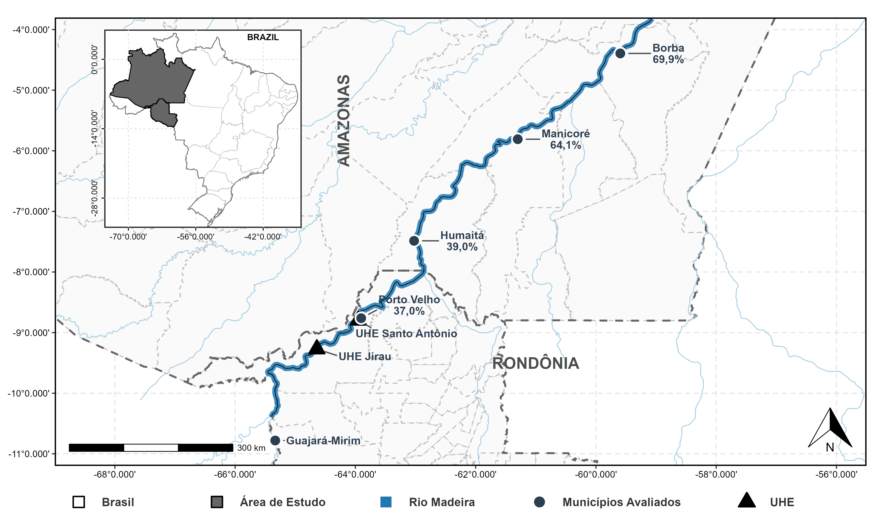

AVALIAÇÃO DO ESTOQUE PESQUEIRO NO RIO MADEIRA À JUSANTE DAS HIDRELÉTRICAS JIRAU E SANTO ANTÔNIO NO ESTADO DO AMAZONAS
Para a elaboração desta análise, utilizamos a linguagem de programação R (versão 4.5.3; R Core Team, 2026), voltada para a manipulação, a análise e a visualização de dados.
1 Sobre os dados
Esta análise utiliza duas bases de dados. A Base 1 – Desembarque Pesqueiro reúne os registros de desembarque das colônias de pescadores dos municípios de Borba e Manicoré, no período de 2002 a 2025. A Base 2 – Cotas Fluviométricas reúne a série histórica das cotas (nível) do Rio Madeira nas estações dessas duas localidades, no período de 1967 a 2026. Juntas, as bases permitem avaliar a dinâmica da pesca e sua relação com as variações do nível do rio, antes e depois da entrada em operação das Usinas Hidrelétricas (UHEs) Jirau e Santo Antônio.
A presente análise tem os seguintes objetivos:
- Correlacionar a produção pesqueira com as variáveis hidrológicas, considerando as possíveis alterações associadas à operação das UHEs;
- Detectar mudanças nas séries temporais da produção pesqueira e das cotas fluviométricas;
- Quantificar as mudanças na produção, composição e diversidade das capturas pesqueiras, comparando os períodos “Antes” e “Depois” da operação das UHEs.
1.1 Tratamento
Antes das análises, as duas bases passaram por um processo de organização e limpeza, feito no Microsoft Excel e no R, de forma separada para cada uma.
Base 1 – Desembarque Pesqueiro:
Ao analisar os dados, reunimos os registros de Borba e Manicoré em uma única base e padronizamos as variáveis de texto e de agrupamento, definindo cada uma como fator ou caractere, conforme a sua natureza. Os dados originais estavam em formato largo, com cada ano em uma coluna. Por isso, utilizamos a função tidyr::pivot_longer() para passá-los ao formato longo, no qual cada linha corresponde a um registro de um ano, criando as variáveis ano e captura_total. Em captura_total, trocamos a vírgula decimal por ponto e convertemos os valores para número. Em seguida, removemos os registros sem informação de captura e os anos de 2000 e 2001, mantendo o período de 2002 a 2025. Por fim, criamos a variável periodo_barragem, a partir do ano, que classifica os registros em três momentos: Antes (2002 a 2010), Transição (2011) e Depois (2012 a 2025).
Conforme a metodologia da tese, os dados de pesca recolhidos de janeiro de 2002 a julho de 2011 pertencem à categoria “Antes”, e os recolhidos de agosto de 2011 a dezembro de 2025, à categoria “Depois”. Como os nossos registros de desembarque são anuais, e não mensais, não é possível separar o ano de 2011 nesses dois momentos. Por isso, mantivemos 2011 como ano de Transição, sem atribuí-lo a nenhum dos dois grupos.
Após o tratamento, verificamos a presença de valores ausentes e não encontramos registros omissos nas variáveis consideradas. Ao final, a base ficou com 888 observações, cujas variáveis estão descritas na Tabela 1.
| Variável | Descrição | Tipo | Classe (R) | Níveis | Tamanho Amostral (n) | Dados Ausentes (NA’s) |
|---|---|---|---|---|---|---|
localidade |
Município de desembarque (Borba ou Manicoré) | Qualitativa Nominal | Fator | 2 | 888 | 0 |
especie |
Nome científico da espécie | Qualitativa Nominal | Caractere | – | 888 | 0 |
nome_comum |
Nome popular do peixe | Qualitativa Nominal | Caractere | – | 888 | 0 |
familia |
Família a que a espécie pertence | Qualitativa Nominal | Fator | 9 | 888 | 0 |
ordem |
Ordem a que a espécie pertence | Qualitativa Nominal | Fator | 5 | 888 | 0 |
habitat |
Ambiente em que a espécie vive | Qualitativa Nominal | Fator | 3 | 888 | 0 |
migration |
Comportamento migratório da espécie | Qualitativa Nominal | Fator | 3 | 888 | 0 |
nivel_tropico |
Posição da espécie na cadeia alimentar | Qualitativa Nominal | Fator | 5 | 888 | 0 |
status_mercado |
Situação do pescado no mercado | Qualitativa Nominal | Fator | 3 | 888 | 0 |
periodo |
Classificação da pescaria por período | Qualitativa Nominal | Caractere | – | 888 | 0 |
periodo_2 |
Segunda classificação da pescaria por período | Qualitativa Nominal | Fator | 6 | 888 | 0 |
periodo_barragem |
Momento em relação às hidrelétricas | Qualitativa Ordinal | Fator | 3 | 888 | 0 |
ano |
Ano do registro (2002 a 2025) | Quantitativa Discreta | Inteira | – | 888 | 0 |
dias |
Número de dias de pesca informados (esforço) | Quantitativa Discreta | Numérica | – | 888 | 0 |
captura_total |
Quantidade desembarcada, em quilos | Quantitativa Contínua | Numérica | – | 888 | 0 |
Base 2 – Cotas Fluviométricas:
Ao analisar os dados, observamos que os arquivos originais da Agência Nacional de Águas e Saneamento Básico (ANA) começam com um cabeçalho institucional, que traz o dicionário dos dados. Esse trecho foi desconsiderado na importação. Em seguida, reunimos as estações de Borba e Manicoré em uma única base e definimos o tipo das variáveis localidade, ano e mes. Padronizamos hora para o formato %H:%M:%S e, com o dicionário da ANA, substituímos os códigos numéricos das variáveis categóricas pelos rótulos correspondentes, apresentados na Tabela 2.
| Variável | Código = Rótulo |
|---|---|
nivel_consistencia |
1 = Bruto; 2 = Consistido |
media_diaria |
0 = Não; 1 = Sim |
tipo_medicao_cotas |
1 = Escala; 2 = Linígrafo; 3 = Data Logger; 5 = Escala SMS |
status, maxima_status, minima_status, media_status, media_anual_status |
0 = Branco; 1 = Real; 2 = Estimado; 3 = Duvidoso; 4 = Régua Seca |
Os dados originais traziam 31 colunas de cotas diárias e outras 31 de status. Com a função tidyr::pivot_longer(), passamos a base para o formato longo, criando as variáveis cota, status e referencia_dia. Criamos ainda a variável identificador_cota, que guarda a coluna de origem de cada medição (por exemplo, cota_01).
Diferentemente da Base 1, mantivemos os valores ausentes (NA) de cota e das demais variáveis hidrológicas, pois eles indicam períodos em que não houve medição. Dessa forma, preservamos a sequência e o espaçamento originais da série histórica. Ao final, a base ficou com 144.181 registros. A quantidade de observações e de valores ausentes de cada variável está na Tabela 3.
| Variável | Descrição | Tipo | Classe (R) | Níveis | Tamanho Amostral (n) | Dados Ausentes (NA’s) |
|---|---|---|---|---|---|---|
localidade |
Município da estação de medição | Qualitativa Nominal | Fator | 2 | 144.181 | 0 |
estacao_codigo |
Código identificador da estação na ANA | Qualitativa Nominal | Caractere | – | 144.181 | 0 |
nivel_consistencia |
Consistência do dado (Bruto ou Consistido) | Qualitativa Nominal | Fator | 2 | 144.181 | 0 |
data |
Data do registro da medição | Quantitativa Contínua | Data | – | 144.181 | 0 |
ano |
Ano de referência da medição | Quantitativa Discreta | Inteira | – | 144.181 | 0 |
mes |
Mês de referência da medição | Quantitativa Discreta | Inteira | – | 144.181 | 0 |
referencia_dia |
Dia do mês extraído das cotas originais | Quantitativa Discreta | Inteira | – | 144.181 | 0 |
hora |
Hora do registro da medição tratada | Quantitativa Discreta | Caractere | – | 144.181 | 80.879 |
media_diaria |
Indicador de média diária ou instantânea | Qualitativa Nominal | Fator | 2 | 144.181 | 0 |
tipo_medicao_cotas |
Método de leitura (Escala, Linígrafo, etc.) | Qualitativa Nominal | Fator | 4 | 144.181 | 0 |
identificador_cota |
Identificador da cota original (ex: cota_01) | Qualitativa Nominal | Fator | 31 | 144.181 | 0 |
cota |
Medição diária do nível do rio (formato longo) | Quantitativa Contínua | Numérica | – | 144.181 | 3.240 |
status |
Status de qualidade da medição diária | Qualitativa Nominal | Fator | 5 | 144.181 | 26.732 |
maxima |
Cota máxima mensal | Quantitativa Contínua | Numérica | – | 144.181 | 1.953 |
minima |
Cota mínima mensal | Quantitativa Contínua | Numérica | – | 144.181 | 2.015 |
media |
Cota média mensal | Quantitativa Contínua | Numérica | – | 144.181 | 2.015 |
dia_maxima |
Dia de ocorrência da cota máxima | Quantitativa Discreta | Numérica | – | 144.181 | 1.953 |
dia_minima |
Dia de ocorrência da cota mínima | Quantitativa Discreta | Numérica | – | 144.181 | 2.015 |
media_anual |
Cota média anual no período | Quantitativa Contínua | Numérica | – | 144.181 | 76.508 |
maxima_status |
Status de qualidade da cota máxima | Qualitativa Nominal | Fator | 5 | 144.181 | 0 |
minima_status |
Status de qualidade da cota mínima | Qualitativa Nominal | Fator | 5 | 144.181 | 0 |
media_status |
Status de qualidade da cota média | Qualitativa Nominal | Fator | 5 | 144.181 | 0 |
media_anual_status |
Status de qualidade da média anual | Qualitativa Nominal | Fator | 5 | 144.181 | 2.604 |
1.2 Dados tratados
Os dados tratados das duas bases estão disponíveis para download em formato Excel (.xlsx), para consulta ou para reproduzir as análises.
2 Taxas de Declínio Produtivo
| Município | Período | Série Temporal (\(n\)) |
Total Acumulado (kg) |
Média Anual ± DP (kg) |
Intervalo da Série [Mín – Máx] (kg) |
Amplitude da Série (kg) |
Taxa de Declínio Produtivo |
|---|---|---|---|---|---|---|---|
| Borba | Antes | 2002–2010 (9) | 816.058 | 90.673 ± 25.026 | [50.007 – 126.332] | 76.325 | −69,9% ↓ |
| Depois | 2012–2024 (13) | 354.846 | 27.296 ± 4.621 | [20.450 – 36.161] | 15.711 | ||
| Manicoré | Antes | 2002–2010 (9) | 17.020 | 1.891 ± 85 | [1.701 – 1.971] | 270 | −64,1% ↓ |
| Depois | 2012–2024 (13) | 8.826 | 679 ± 143 | [453 – 975] | 522 |
Notas metodológicas. Para a análise comparativa, foram considerados os períodos 2002–2010 (antes do barramento) e 2012–2024 (depois do barramento). O ano de 2011, classificado anteriormente como período de transição, foi excluído por não permitir a separação entre os momentos antes e depois do barramento nos dados anuais. O ano de 2025 também foi desconsiderado por apresentar dados incompletos. Assim, o ano produtivo foi adotado como unidade amostral, sendo \(n\) o número de anos em cada período. O Desvio Padrão (DP) representa a variabilidade interanual da produção, enquanto a Amplitude da Série corresponde à diferença entre os valores máximo e mínimo observados.
A Taxa de Declínio Produtivo (\(\Delta P\)) expressa a redução percentual da produção pesqueira média anual entre os períodos antes e depois do barramento, sendo calculada por:
\[ \Delta P(\%) = \left( \frac{ \bar{P}_{\text{Antes}}-\bar{P}_{\text{Depois}} }{ \bar{P}_{\text{Antes}} } \right) \times 100 \]
Borba
\[ \Delta P_{\text{Borba}} = \left( \frac{ 90.673-27.296 }{ 90.673 } \right) \times 100 = 69{,}9\% \]
Manicoré
\[ \Delta P_{\text{Manicoré}} = \left( \frac{ 1.891-679 }{ 1.891 } \right) \times 100 = 64{,}1\% \]
3 Mapa comparativo das taxas

EN: Spatial distribution of fishing activity decline rates along the Madeira River, between Porto Velho (RO) and Borba (AM). The percentages correspond to the reductions reported for Porto Velho (37.0%), based on Catch Per Unit Effort (CPUE), and Humaitá (39.0%), as well as those estimated in this study for Manicoré (64.1%) and Borba (69.9%), based on mean annual fish production. CPUE relates the amount of catch to the fishing effort employed. The triangles indicate the locations of the Jirau and Santo Antônio hydroelectric power plants.

Comentários: A distribuição espacial apresentada na Figura 1 evidencia diferentes magnitudes de declínio entre as localidades avaliadas ao longo da calha do Rio Madeira. Em Porto Velho (RO), Arantes et al. (2021) reportaram redução de 37,0% na Captura por Unidade de Esforço (CPUE), indicador que relaciona a quantidade capturada ao esforço de pesca empregado. Em Humaitá (AM), Santos et al. (2018) observaram redução de 39,0% na produção pesqueira média anual. Para as localidades analisadas neste estudo, foram estimadas reduções de 64,1% em Manicoré e 69,9% em Borba, calculadas a partir da produção pesqueira média anual nos períodos antes e depois do barramento.
Em termos espaciais, observa-se aumento na magnitude das taxas de declínio no sentido de Porto Velho para Borba. Entretanto, essa distribuição deve ser interpretada com cautela, pois os percentuais são provenientes de diferentes estudos e não representam necessariamente o mesmo indicador. Em Porto Velho, a redução refere-se à CPUE, enquanto os valores de Humaitá, Manicoré e Borba estão associados à produção pesqueira média anual.
4 Variáveis hidrológicas
Objetivo: Correlacionar a produção pesqueira com as variáveis hidrológicas, considerando as possíveis alterações associadas à operação das UHEs;
5 Séries temporais
Objetivo: Detectar mudanças nas séries temporais da produção pesqueira e das cotas fluviométricas;
6 Antes e depois das UHEs
Objetivo: Quantificar as mudanças na produção, composição e diversidade das capturas pesqueiras, comparando os períodos “Antes” e “Depois” da operação das UHEs;